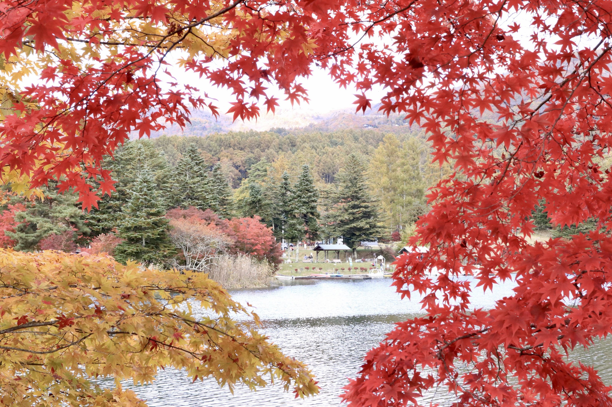

PLAYER PROFILE
01 / PROFILEPLAYER 01
情報系の大学生
STATUS : LEARNING...
- INTEREST
- ゲーム
- FIELD
- プログラミング
- HOBBY
- ゲーム、自然を感じること
- ACTIVITY
- 研究・制作
ABOUT ME
幼いころからゲームが大好きな、情報系の大学生です。いつかゲーム業界でエンジニアとして働くことを目標にしています。
大学ではプログラミングをはじめ、Unityを使ったゲーム制作、3Dモデリング、Androidアプリ開発など、さまざまな制作課題に取り組んできました。
このサイトは、これまでの学びや制作物をまとめるために、レトロなRPGの雰囲気をイメージして制作しています。
★ GAME HISTORY
これまで遊んできたゲームを、ゲーム機ごとにまとめました。
-
01ゲームボーイアドバンスSP
- メイド イン ワリオ
- マリオシリーズ
-
02Wii
- マリオシリーズ
- Wii Sports
- Wii Party
など
-
03DS・3DS
- どうぶつの森
- ポケットモンスター
- 妖怪ウォッチ
- マリオシリーズ
- 大乱闘スマッシュブラザーズ
- トモダチコレクション
など
-
04Switch・Switch 2
- スプラトゥーン
- 大乱闘スマッシュブラザーズ
- モンスターハンター
- 世界のアソビ大全51
など
-
05PC
- Apex Legends
- Escape from Tarkov
- Minecraft
- ストリートファイター6
- Enlisted
など
-
06スマホ
- 原神
- 荒野行動
- Among Us
- Pokémon GO
★ MY GAME DATA
★ MOST FAVORITE GAME
- GAME TITLE
- GENRE
- PLATFORM
- PLAY TIME
- COMMENT
★ PHOTO LOG
自然を感じに出かけたときの写真です。
愛用カメラ：Canon EOS M5
